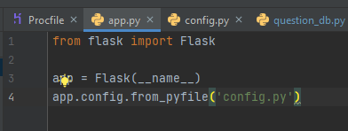
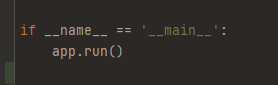

עוד נראה אם זה יעבוד.
קח דף ועט וצייר שנייה לעצמך איך הארוקו מפעיל את האפליקציה.
מאיפה הוא מתחיל ומה הוא טוען, לפי הסדר.
הוא טוען את כל המודולים וסביבת העבודה ואז מנסה להריץ את הקוד. זה כל מה שאני יודע. לא זכור לי שלמדנו מעבר לזה.
זה חיסרון מסוים לא להבין איך קוד שכתבת עובד 
גגל מה השורה שהכנסת ל־Procfile עושה, זה יעזור לך להתיר את הסבך.
מסלול ההרצה ב־Heroku מתחיל משם, ברגע שתבין את זה אני מאמין שיהיה לך קל יותר לסדר את הבעיה.
זה עובד! הללויה. האתר עולה ומסד הנתונים מתעדכן!
אז מה למדתי? הפרוקפייל הוא סט הוראות לשרת של הירוקו. הוא אומר לו “זה צריך לרוץ על שרת ווב” והוא אומר לו “יש קובץ ראשי בשם “שקרכלשהו.פי” שמחובר לאובייקט אפפ” לך לאובייקט אפפ שמכיל את הקובץ ותריץ אותו על שרת הווב. אני בטוח שזה לא ממש נכון אבל קרוב לנכון. בשרת מקומי זה לא משנה כי הוא יודע בדיוק לאן ללכת. אבל שרת של הירוקו צריך את הפרוקפייל, כי אחרת הוא לא יודע לאן ללכת. אם השם של הקובץ הראשי או של אובייקט האפליקציה לא נכונים, הירוקו לא יודע לאן ללכת. הבנתי נכון?
זה הקטע שעזר לי להבין:
{kind=link}
לייק 1
הבנת נכון. ברכותיי
לייק 1
אני מקבל את אותה הודעת שגיאה כמו שבכותרת השרשור, המודול הראשי שלי שמריץ את האפליקציה נקרא app.py ותוכן הProcfile הוא web: gunicorn app:app, כל שאר הקבצים נמצאים בתוך תיקייה ומחולקים לקבצים כולל init.py.
הרצה מקומית של האתר עבדה מצויין וגם חיבור ל-db מרוחק.
לא ברורה לי מה הבעיה ואני לא מצליח למצוא בגוגל תשובות.
אשמח לעזרה.
ויצרת אובייקט app? כי זו הבעיה היחידה שיכולה לעלות לי בראש. כלומר האם יש לך בקוד את זה:

יצרתי אובייקט כזה בקובץ init.py
הקובץ app.py שלי רק מייבא ומריץ אותו
אנסה להחליף אותם.
יש מצב שזה יעבוד. הקוד שלי עובד בלי init.py. כלומר, אתה צריך ליצור את האובייקט באפפ.פיי ולקרוא לו בקוד הראשי שלך, זה שמריץ את כל העסק. בקוד הזה אתה גם צריך להגדיר לאובייקט את הסיקרט קי.
לצערי זה לא פתר לי את הבעיה
הבעיה כנראה בכלל הייתה קשורה במשתני סביבה של heroku
אני מקווה שעוד לא מאוחר מדי להגיש הכל
תודה רבה על העזרה
עכשיו אני מסתכל במעלה השרשור ורואה שזו מראש לא הייתה הבעיה. לגבי משתני סביבה, זה סיוט שלא ברא השטן ובזבזתי על זה את כל היום. בסוף מה שעבד זה הפתרון ש imi פרסמה בטלגרם. יש לפיווי מודול מיוחד שמטפל בזה. צריך להגדיר לו את DATABASE_URL ולהגדיר אותו דבר במשתני סביבה של הירוקו, יחד עם הסיקרט קי. אחרי שעושים את כל זה צריך לעשות דיפלוי לאתר, ולפני שמעלים אותו צריך להכנס לקונוסולה של הירוקו (בכפתור של More) ושם להריץ את בפייתון את הקובץ בקוד שלך שמאתחל את הדאטהבייס. ואז זה אמור לעבוד.